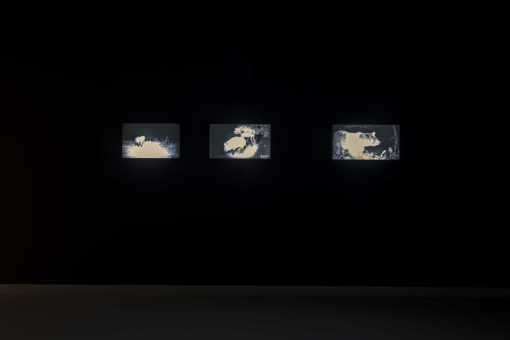
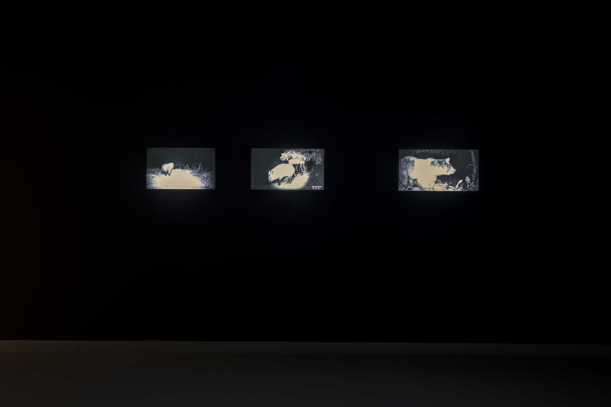

In Eluding “humans” (2019) we encounter animals which stay away from people, as if dodging their wrath, in their natural habitats. These images are captured by sensor camera traps that were built in order to investigate the nocturnal animals, mostly for scientific purposes.
Eluding "humans"


 
